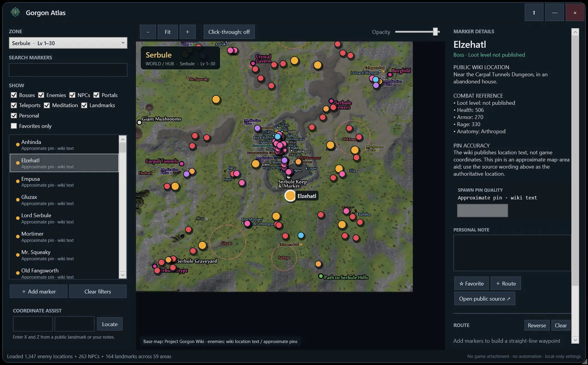

Search what matters
Find bosses, enemies, service NPCs, portals, teleports, meditation pillars, and landmarks by name or description.
A map companion for Project: Gorgon
A searchable, always-on-top Windows atlas for enemies, bosses, NPCs, landmarks, portals, dungeons, notes, and routes.
Windows 10/11 · x64 · No installer · No administrator access
Built for a second screen—or no second screen
Resize it, adjust opacity, or turn on click-through while you play.

Everything in reach
Find bosses, enemies, service NPCs, portals, teleports, meditation pillars, and landmarks by name or description.
Browse every current public Wiki zone and dungeon page, including peaceful caves with no enemy records.
Save favorites, attach private notes, add personal markers, and arrange simple waypoint routes. Everything stays local.
Pan, zoom, resize, change opacity, stay on top, or use click-through. The separate unlock tab keeps you from getting stuck.
Ready in a minute
Get the latest Windows build from GitHub Releases.
Keep the Data and Assets folders next to GorgonAtlas.exe.
Use Project: Gorgon in windowed or borderless-windowed mode for the smoothest experience.
Honest about the data
Friendly NPC and landmark coordinates come from Elder Game’s public third-party data. The official feed does not publish enemy spawn coordinates.
Enemy and boss entries use the Project: Gorgon Wiki’s written creature-location records. Those pins are labeled Approximate or Area-wide, and the original location wording remains visible in the details panel.
Good to know
No. It does not attach to the game, read memory, intercept traffic, automate input, or modify the client.
The personal build is not code-signed, so Windows may show an unknown-publisher warning. It does not require administrator rights.
Click the orange Unlock overlay tab or press Ctrl+Shift+M to turn click-through off.
Settings, notes, favorites, routes, and personal markers stay locally in your Windows profile.
The download is a compiled Windows package.